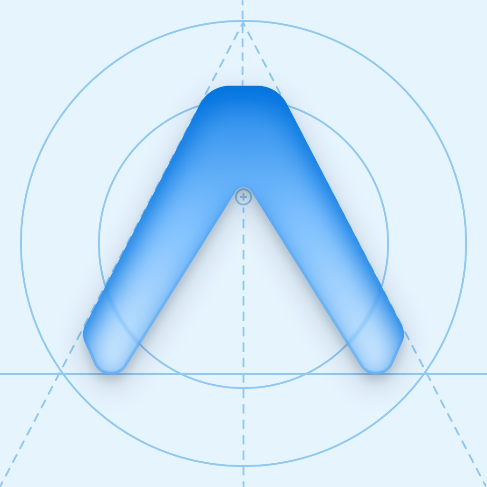

PuffPuff puts a document editor, a file tree, and a chat panel in one window, then connects them to the servers you already run.
preview/ subtree without leaving the workspace.Nowhere you did not point it. Puff has no account system, no analytics, and no server of its own: everything you write is stored on the device or on the backend you connect. The first launch includes a demo workspace so the app can be tried without any server at all.
A Paseo daemon, an OpenClaw gateway, or an OpenCode v2 server. See support for connection details.